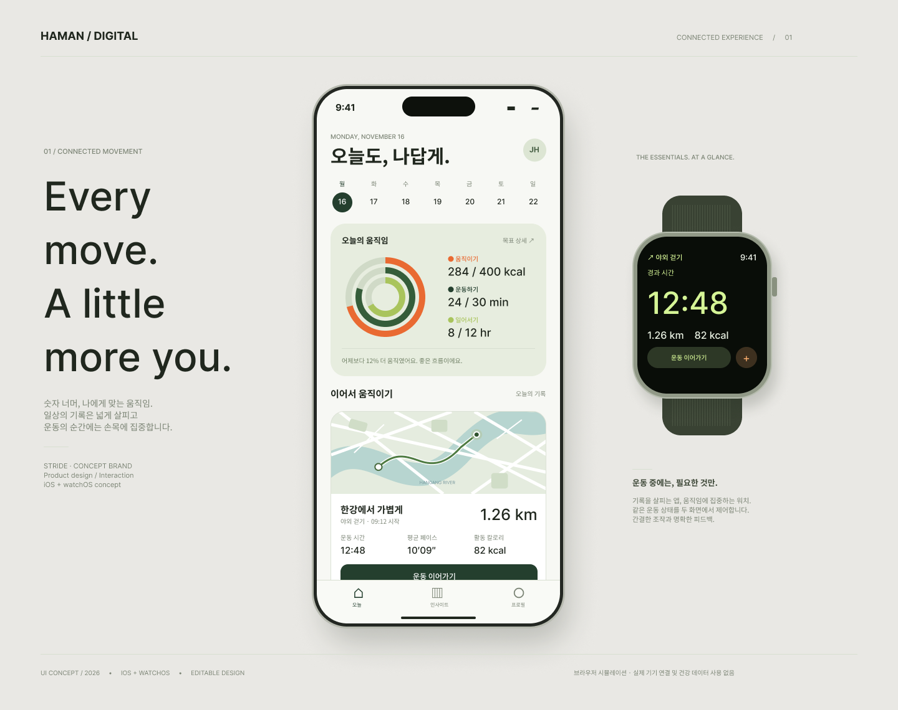
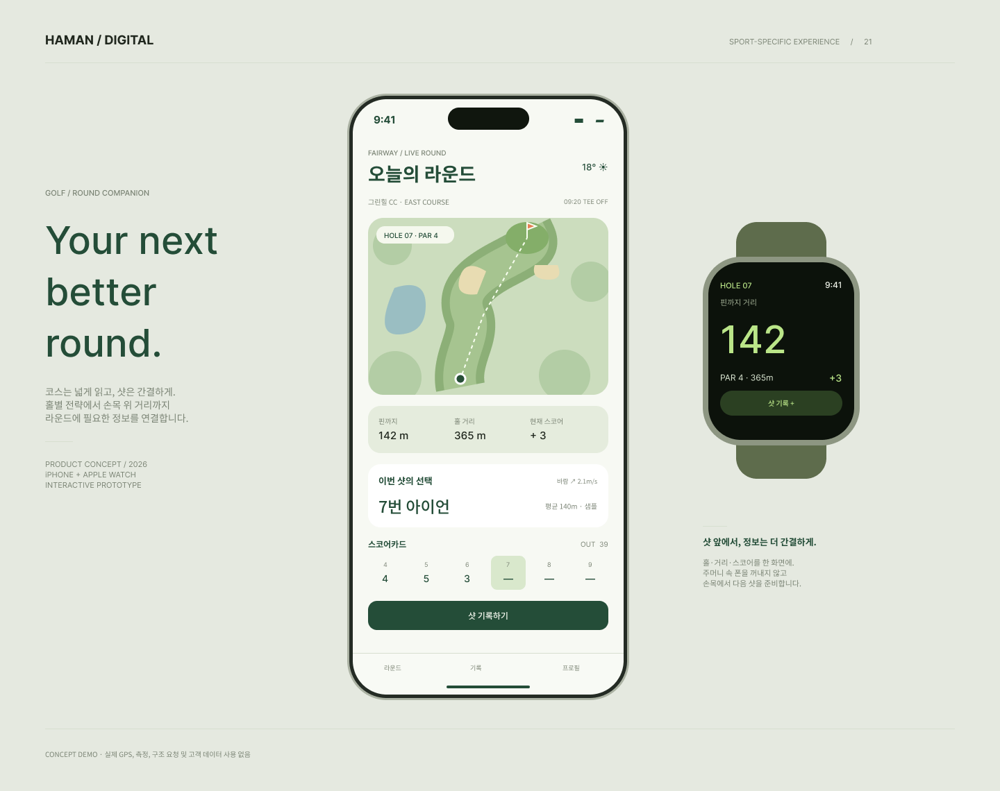
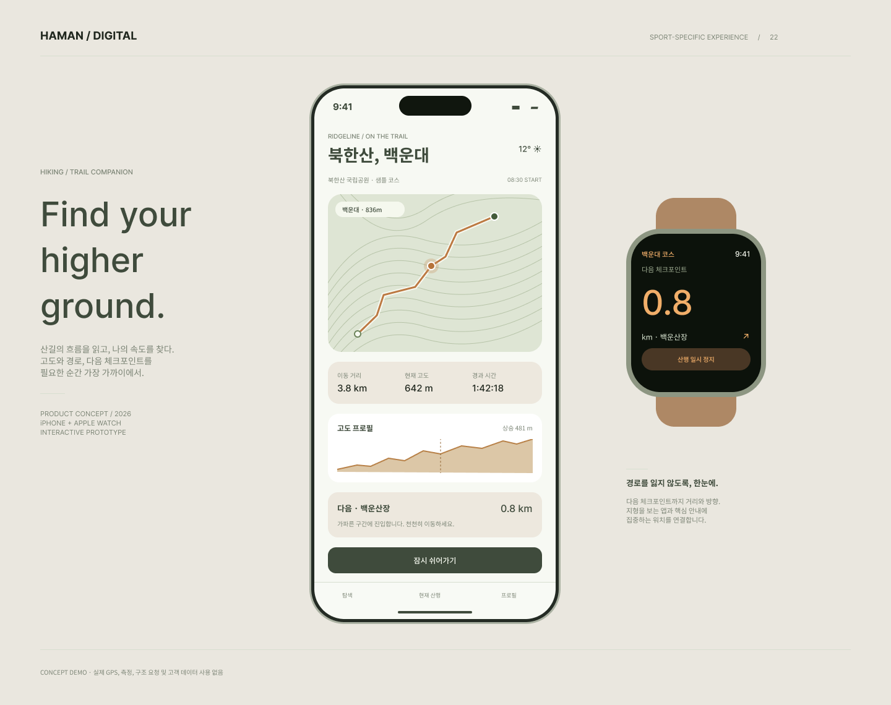

STRIDE
01 / 피트니스 · FIGMA DESIGN하루의 움직임을 넓은 화면에서 살피고, 손목에서는 지금 필요한 정보에 집중합니다.

피트니스, 골프, 등산. Figma에서 제작한 앱·워치 디자인 원본 3종을 공개합니다.
이 페이지는 디자인 이미지 전시입니다. 이미지 안의 버튼은 작동하지 않으며, 실제 앱·워치 연결이나 GPS 측정 기능을 제공하지 않습니다. 원본 이미지를 크게 열어 세부 디자인을 확인할 수 있습니다.
하루의 움직임을 넓은 화면에서 살피고, 손목에서는 지금 필요한 정보에 집중합니다.

코스와 스코어는 한눈에. 다음 샷에 필요한 거리 정보를 손목까지 연결하는 디자인입니다.

경로와 고도, 다음 체크포인트를 휴대폰과 워치의 서로 다른 화면에 담았습니다.
